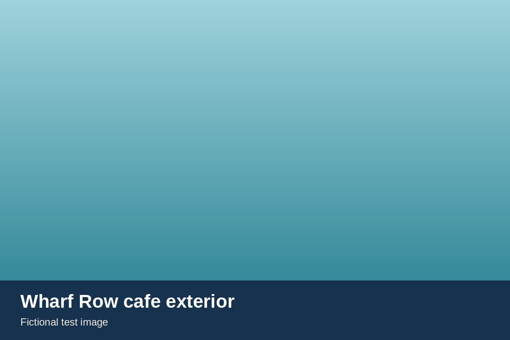
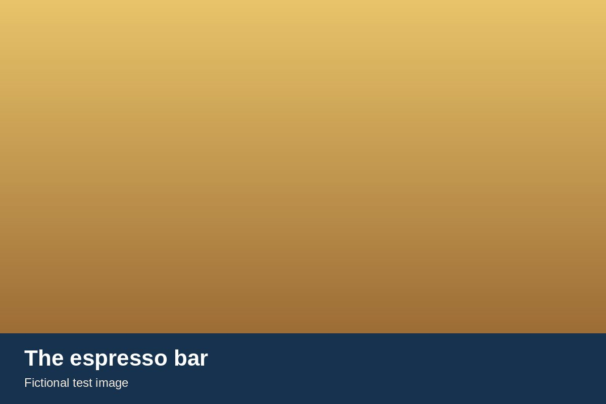
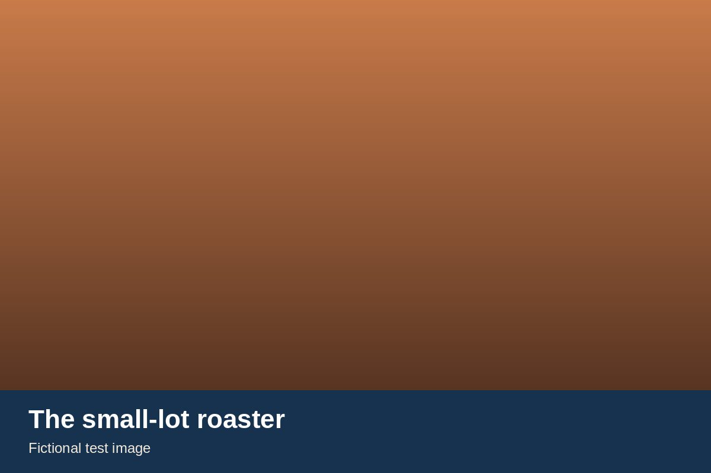
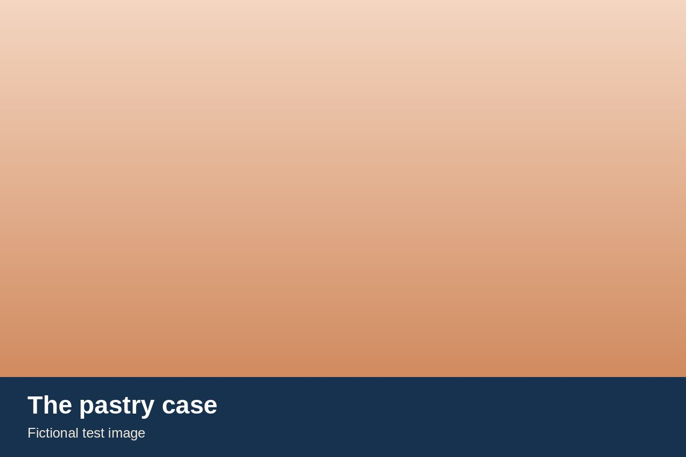
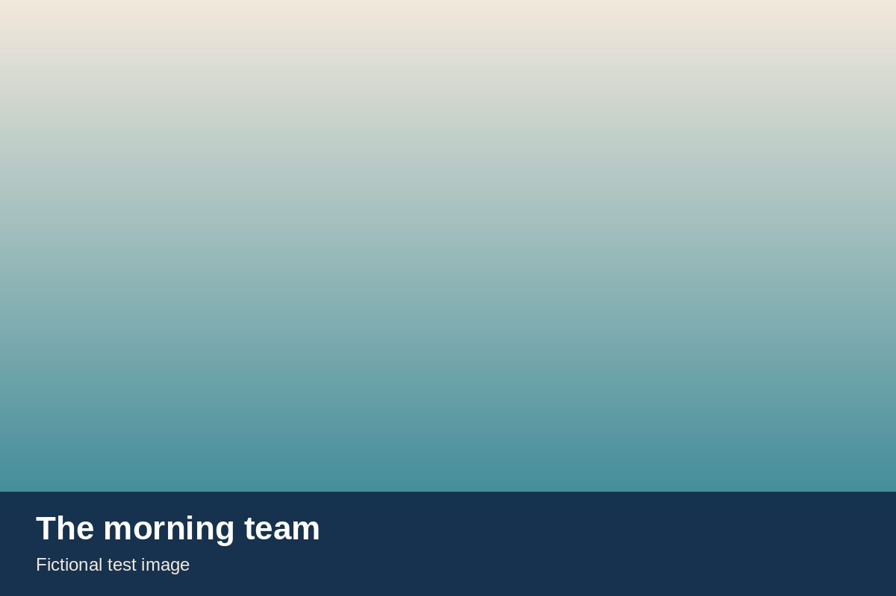
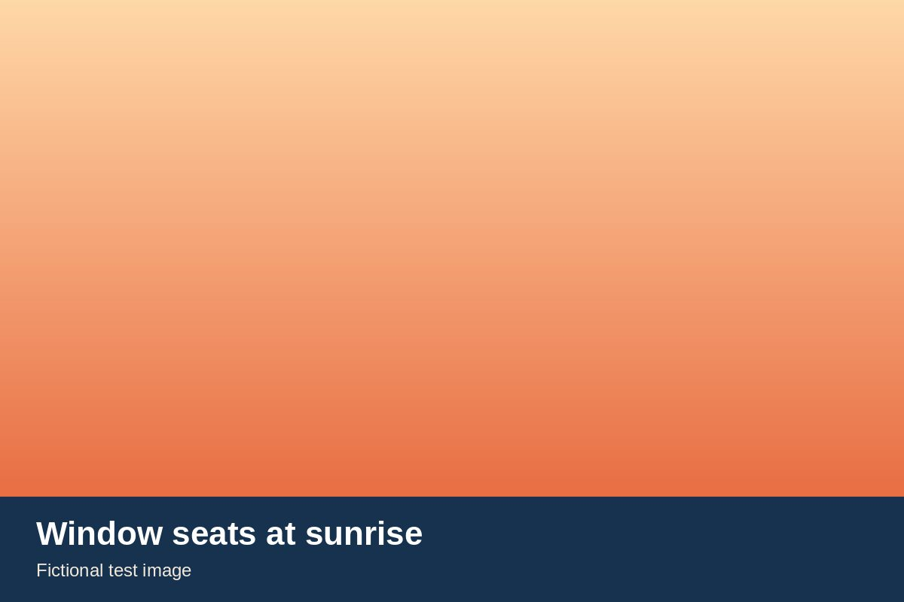
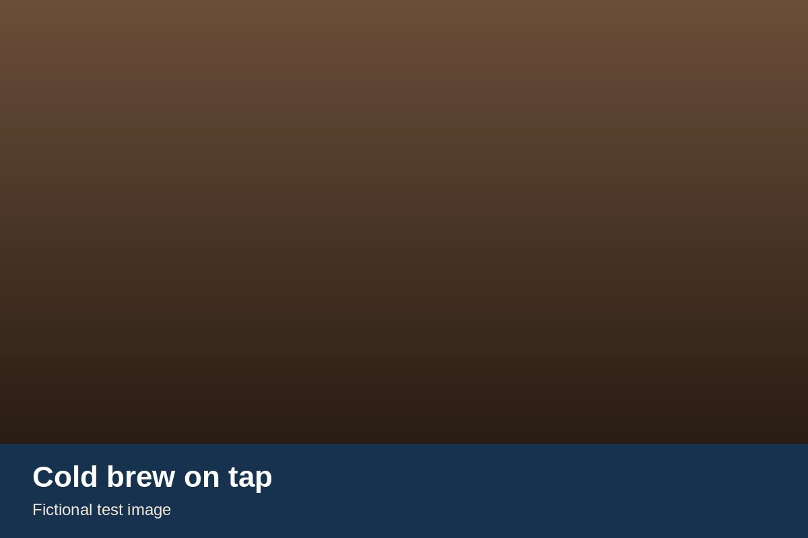
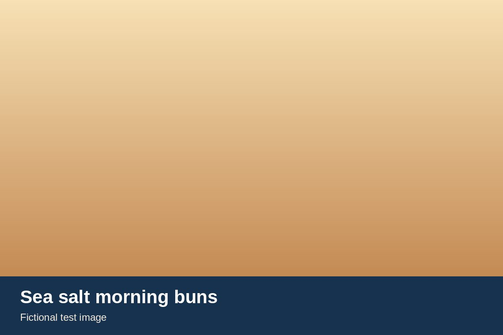
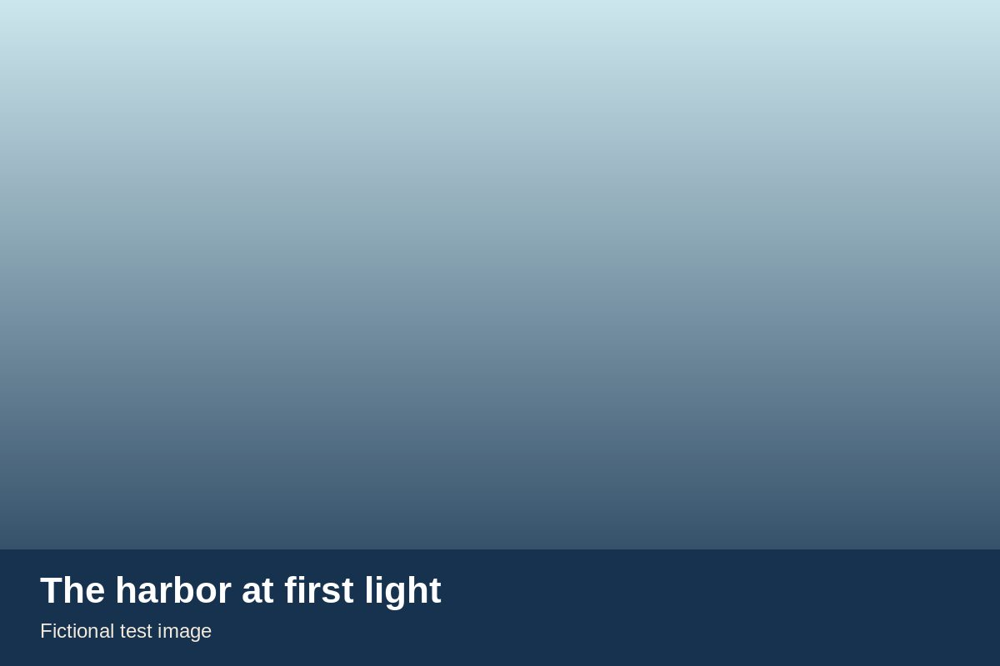

Welcome to your neighborhood coffee house
Every morning we roast small-batch coffee in the cafe and bake with local butter and flour from family farms nearby. Come in, gather around a table, and stay a while.
We are a family business that grew one neighborhood at a time. Our cafes are where the community meets before work, after school and on the first warm day of spring.
Our coffee is crafted in small lots, and our morning buns are made the slow way. Welcome in, neighbors.








